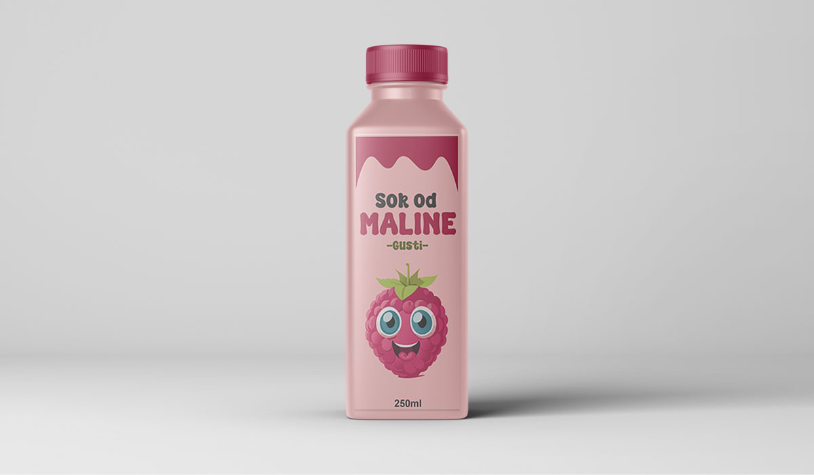

My Portfolio



Grafički/Web dizajner
Dobrodošli na moju portfolio web stranicu!
Završio sam tehničku školu i prirodoslovnu gimnaziju Ruđera Boškovića Osijek smjer Grafički urednik-dizajner. Znam programe kao što su Adobe Illustrator,Photoshop te inDesign i nešta malo Figmu.
Nakon završene srednje škole nisam se pronašao na faksu pa sam odlučio se upoznati sa Web dizajnom te završio tečaj u Edunovi
Nakon završenog tečaja u Edunovi htio sam malo više naučiti o front-endu(JavaScriptu i React-u) te sam upisao tečaj u Algebri.
Na prethodnom poslu kao grafički dizajner, fokusirao sam se na izradu reklama za LED ekrane, pripremu tiska te kreiranje logotipa za male obrte. Moje odgovornosti su uključivale brzu prilagodbu različitim zahtjevima projekata, pa쬷jivu komunikaciju s klijentima putem e-maila te stvaranje vizualnih rješenja koja su privlačila pa쬹ju i komunicirala ključne poruke.